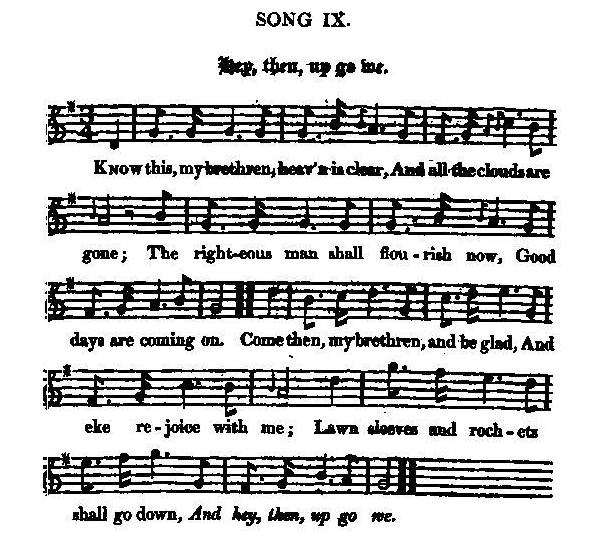

Hey then, up go we!
Allons-y, hauts les cœurs!
A sarcastic anti-Whig anthem of Charles I.'s time
Une charge anti-Whigs de l'époque de Charles I
Tune - Mélodie
"Hey then, up go we!"
from - tiré de: Hogg's "Jacobite Relics" N°9
Sequenced by Christian Souchon

|
"I have got many editions of this popular old song, all distinct from one another, but all levelled against the Whigs, though in different ages. I am informed that this which I have adopted is one of Charles I.'s time."
Source: James Hogg in "Jacobite Relics" |
"J'ai reçu plusieurs versions de ce vieux chant populaire, toutes différentes les unes des autres, mais toutes dirigées contre les Whigs, bien qu'à des époques diverses. On m'a dit que celle que j'ai adoptée date du temps de Charles I."
Source: James Hogg dans "Jacobite Relics" |

|
HEY, THEN UP GO WE!
1. Know this, my brethren, heav'n is clear, And all the clouds are gone The righteous man shall flourish now, Good days are coming on. Come then, my brethren, and be glad, And eke rejoice with me; Lawn sleeves and rochets [1] shall go down, And hey, then, up go we. 2. We'll break the windows, which the whore Of Babylon hath painted, And when the Popish saints are down. Then Burges [2] shall be sainted. There's neither cross, nor crucifix, Shall stand for men to see ; Rome's trash and trumpery shall go down. And hey, then, up go we. 3. Whate'er the Popish hands have built, Our hammers shall undo, We'll break their pipes, and burn their copes, And burn down churches too; We'll exercise within the groves, And preach beneath the tree; We'll make a pulpit of a cask, And hey, then, up go we. 4. We'll down with all the versities, Where learning is profest, Because they practise and maintain The language of the Beast; [3] We'll drive the doctors out of doors And parts whate'er they be; We'll cry all arts and learning down, And key, then, up go we. 5. We'll down with deans and prebends too, And I rejoice to tell ye, How that we will eat pigs our fill, And capon by the belly; We'll burn the fathers' learned books, And make the schoolmen flee; We'll down with all that smells of wit, And hey, then, up go we. 6. If once the antichristian crew Be crush'd and overthrown, We'll teach the nobles how to stoop, And keep the gentry down: Good manners have an ill report, [4] And turn to pride we see, We'll therefore cry good manners down, And hey, then, up go we. 7. The name of Lord shall be abhorr'd, For every man's a brother; No reason why, in church or state, One man should rule another. But when the change of government Shall set our fingers free, We'll make the wanton sisters stoop, And hey, then, up go we. 8. What though the king and parliament Do not accord together, We have more cause to be content; This is our sunshine weather; For if that reason should take place, And they should once agree, Who would be in a roundhead's case ? [5] And hey, then, up go we. 9. What should we do then in this case? Let's put it to a venture; If that we hold out seven year's space, We'll sue out our indenture. A time may come to make us rue, And time may set us free, Except the gallows claim his due, And hey, then, up go we. [6] Source: "The Jacobite Relics of Scotland, being the Songs, Airs and Legends of the Adherents to the House of Stuart" collected by James Hogg, published in Edinburgh by William Blackwood in 1819. |
ALLONS-Y, HAUTS LES COEURS!
1. Frères, sachez-le, de nos cieux, Les nuages ont fui. Au Juste un avenir heureux Est désormais promis. Réjouissez-vous, frères, venez: Et opposons à ces Manches de batiste et rochets [1] Nos effets retroussés! 2. Les vitres que la Prostituée De Babylone orna De saints papistes, soient brisées! Burgès [2] y pourvoira! A bas, les croix, les crucifix, Un mur vide est si beau! Rome en suspendait à l'envi: Tous à nos escabeaux! 3. Ce que le Papiste a construit Soit la proie du marteau! Brisons ses orgues et ses huis! Les temples sont de trop; Nous pratiquerons dans les bois, Prêchant sur un tonneau, La frondaison pour abat-voix. Prêcheurs, toujours plus haut! 4. Fermons les universités Où l'on enseigne et l'on Perpétue, quelle absurdité! L'idiome du Démon. [3] Oui, nous chasserons les docteurs Des emplois, des locaux. A bas la science et l'art trompeurs! Vive l'esprit nouveau! 5. Finis prébendes et doyens, Soyez-en assurés! A nous, pour calmer notre faim, Chapons et porcelets! Les livres savants au bûcher! Les érudits dehors! C'en est fini des beaux esprits: Nous serons les plus forts! 6. Quand l'Antéchrist et son clergé Ne feront plus la loi, Nous apprendrons à se courber Au noble et au bourgeois. Les bonnes manières [4] rendaient D'eux-mêmes trop imbus Ces gens-là. Qu'elles n'aient plus cours. Nous leur grimpons dessus! 7. Plus de lords, ni de potentats! Un "frère" est ton prochain. Pourquoi dans l'église ou l'état Avoir des souverains? Quand le régime aura changé, Nos impudiques sœurs Ploieront sous nos doigts libérés. Allons-y, haut les cœurs! 8. Quand le Parlement et le Roi Clament leur désaccord, Nous nous en réjouissons, ma foi: Cela nous rend plus forts. Mais si la raison l'emportait, Que ferait-on alors? Aux Têtes rondes [5], un procès: Nous en serions encor! 9. Que devrons-nous faire en ce cas? Etre persévérants! Nous aurons rempli le contrat, Si nous tenons sept ans. Car, après le temps des regrets, Ami, viendra ton tour D'être libre , à moins qu'au gibet Nous pendions haut et court! [6] (Trad. Christian Souchon (c) 2009) |
|
[1]
Rochet
: A linen garment resembling the surplise, but with narrower sleeves, worn by bishops, and by some other, in certain religious ceremonies. Lawn sleeves also were, apparently, a prerogative of ecclesiastical dignitaries.
[2] Burges : maybe a radical Protestant preacher of that time.(?) [3] The language of the Beast : Latin as opposed to English. [4] Good manners : This song is, evidently, like the Cameronian Cat , a sarcastic caricature of ludicrous pretended strictness ascribed to the Whigs by their antagonists. However this remark, when applied to the French revolution, is prophetic: see the Breton song "The Blue Coats" , verse 3. [5] Roundheads see note 3. [6] Hey, then, up go we! : a sole French translation of this pun with multiple meaning proves impossible. |
[1]
Rochet
: surplis à manches étroites que portent les évêques, lors de certaines cérémonies. Les manches de batistes étaient également, semble-t-il, l'apanage de certains dignitaires ecclésiastiques.
[2] Burges : peut-être un prédicateur protestant radical de l'époque (?) [3] L'idiôme du Démon : le latin par opposition à l'anglais. [4] Bonnes manières : ce chant est, bien entendu, tout comme le Chat Caméronien , une charge satirique contre le puritanisme excessif imputé aux Whigs par leurs adversaires. Il n'en est pas moins vrai que cette remarque annonçait certaines pratiques de la révolution française: cf le chant breton "Les Bleus" , strophe 3. [5] "Têtes Rondes" : cf. note 3 . [6] Hey, then, up go we! : Un effet comique est obtenu, dans l'original, par la répétition à la fin de chaque couplet, de cette même phrase ("burden") qui signifie quelque chose comme "Allons-y, grimpons!". Mais à chaque fois, l'expression a un double sens différent qui va de "retroussons nos manches" à la strophe 1, à "montons à l'échafaud" à la strophe 9, en passant par des sous-entendus scabreux. Je n'ai pas trouvé de phrase française unique qui rende toute cette palette de sens divers! |
|
|
|